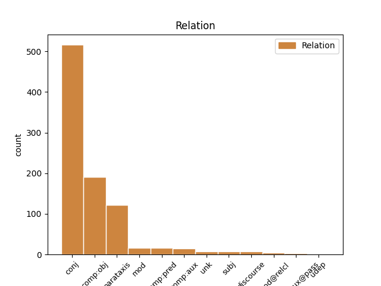
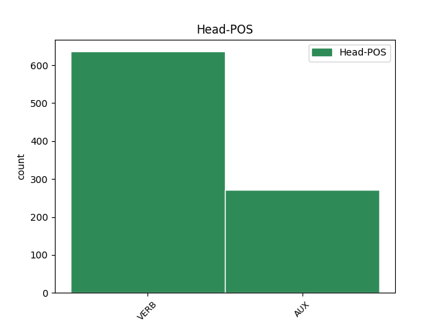
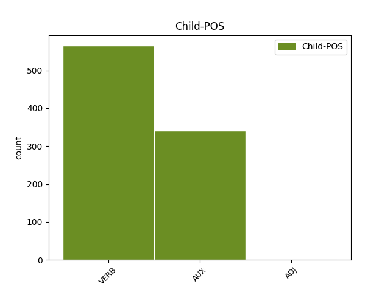

Distribution of features within this leaf



Agreement Rules sorted by frequency.
1 If _ _ _ _ 0 _ _ _
2 you _ _ _ _ 0 _ _ _
3 bought _ _ _ _ 0 _ _ _
4 packaged _ _ _ _ 0 _ _ _
5 quinoa _ _ _ _ 0 _ _ _
6 , _ _ _ _ 0 _ _ _
7 this _ _ _ _ 0 _ _ _
8 step _ _ _ _ 0 _ _ _
9 is be AUX VBZ Mood=Ind|Number=Sing|Person=3|Tense=Pres|VerbForm=Fin 0 _ _ _
10 n't _ _ _ _ 0 _ _ _
11 always _ _ _ _ 0 _ _ _
12 necessary _ _ _ _ 0 _ _ _
13 , _ _ _ _ 0 _ _ _
14 but _ _ _ _ 0 _ _ _
15 it _ _ _ _ 0 _ _ _
16 's be AUX VBZ Mood=Ind|Number=Sing|Person=3|Tense=Pres|VerbForm=Fin 9 conj _ _
17 better _ _ _ _ 0 _ _ _
18 to _ _ _ _ 0 _ _ _
19 be _ _ _ _ 0 _ _ _
20 safe _ _ _ _ 0 _ _ _
21 than _ _ _ _ 0 _ _ _
22 sorry _ _ _ _ 0 _ _ _
23 . _ _ _ _ 0 _ _ _
Disagree Examples:
1 Remember remember VERB VB Mood=Imp|VerbForm=Fin 0 _ _ _
2 you _ _ _ _ 0 _ _ _
3 have have VERB VBP Mood=Ind|Tense=Pres|VerbForm=Fin 1 comp:obj _ _
4 school _ _ _ _ 0 _ _ _
5 tomorrow _ _ _ _ 0 _ _ _
6 . _ _ _ _ 0 _ _ _
7 ” _ _ _ _ 0 _ _ _
1 If _ _ _ _ 0 _ _ _
2 walking _ _ _ _ 0 _ _ _
3 use use VERB VB Mood=Imp|VerbForm=Fin 0 _ _ _
4 caution _ _ _ _ 0 _ _ _
5 , _ _ _ _ 0 _ _ _
6 and _ _ _ _ 0 _ _ _
7 if _ _ _ _ 0 _ _ _
8 parking _ _ _ _ 0 _ _ _
9 , _ _ _ _ 0 _ _ _
10 make _ _ _ _ 0 _ _ _
11 sure _ _ _ _ 0 _ _ _
12 to _ _ _ _ 0 _ _ _
13 feed _ _ _ _ 0 _ _ _
14 the _ _ _ _ 0 _ _ _
15 meter _ _ _ _ 0 _ _ _
16 with _ _ _ _ 0 _ _ _
17 plenty _ _ _ _ 0 _ _ _
18 of _ _ _ _ 0 _ _ _
19 pocket _ _ _ _ 0 _ _ _
20 change _ _ _ _ 0 _ _ _
21 ; _ _ _ _ 0 _ _ _
22 the _ _ _ _ 0 _ _ _
23 meter _ _ _ _ 0 _ _ _
24 maids _ _ _ _ 0 _ _ _
25 take take VERB VBP Mood=Ind|Tense=Pres|VerbForm=Fin 3 parataxis _ _
26 their _ _ _ _ 0 _ _ _
27 job _ _ _ _ 0 _ _ _
28 very _ _ _ _ 0 _ _ _
29 seriously _ _ _ _ 0 _ _ _
30 . _ _ _ _ 0 _ _ _
1 Cover cover VERB VB Mood=Imp|VerbForm=Fin 0 _ _ _
2 containers _ _ _ _ 0 _ _ _
3 with _ _ _ _ 0 _ _ _
4 clear _ _ _ _ 0 _ _ _
5 plastic _ _ _ _ 0 _ _ _
6 kitchen _ _ _ _ 0 _ _ _
7 wrap _ _ _ _ 0 _ _ _
8 , _ _ _ _ 0 _ _ _
9 so _ _ _ _ 0 _ _ _
10 they _ _ _ _ 0 _ _ _
11 stay stay VERB VBP Mood=Ind|Tense=Pres|VerbForm=Fin 1 conj _ _
12 moist _ _ _ _ 0 _ _ _
13 . _ _ _ _ 0 _ _ _
1 If _ _ _ _ 0 _ _ _
2 you _ _ _ _ 0 _ _ _
3 want _ _ _ _ 0 _ _ _
4 to _ _ _ _ 0 _ _ _
5 plant _ _ _ _ 0 _ _ _
6 the _ _ _ _ 0 _ _ _
7 basil _ _ _ _ 0 _ _ _
8 in _ _ _ _ 0 _ _ _
9 a _ _ _ _ 0 _ _ _
10 container _ _ _ _ 0 _ _ _
11 , _ _ _ _ 0 _ _ _
12 make make VERB VB Mood=Imp|VerbForm=Fin 0 _ _ _
13 sure _ _ _ _ 0 _ _ _
14 it _ _ _ _ 0 _ _ _
15 's be AUX VBZ Mood=Ind|Number=Sing|Person=3|Tense=Pres|VerbForm=Fin 12 comp:obj _ _
16 large _ _ _ _ 0 _ _ _
17 enough _ _ _ _ 0 _ _ _
18 to _ _ _ _ 0 _ _ _
19 accommodate _ _ _ _ 0 _ _ _
20 the _ _ _ _ 0 _ _ _
21 number _ _ _ _ 0 _ _ _
22 of _ _ _ _ 0 _ _ _
23 plants _ _ _ _ 0 _ _ _
24 you _ _ _ _ 0 _ _ _
25 're _ _ _ _ 0 _ _ _
26 growing _ _ _ _ 0 _ _ _
27 ; _ _ _ _ 0 _ _ _
1 When _ _ _ _ 0 _ _ _
2 someone _ _ _ _ 0 _ _ _
3 comes _ _ _ _ 0 _ _ _
4 in _ _ _ _ 0 _ _ _
5 , _ _ _ _ 0 _ _ _
6 say say VERB VB Mood=Imp|VerbForm=Fin 0 _ _ _
7 , _ _ _ _ 0 _ _ _
8 " _ _ _ _ 0 _ _ _
9 I _ _ _ _ 0 _ _ _
10 've have AUX VBP Mood=Ind|Tense=Pres|VerbForm=Fin 6 unk _ _
11 got _ _ _ _ 0 _ _ _
12 this _ _ _ _ 0 _ _ _
13 , _ _ _ _ 0 _ _ _
14 " _ _ _ _ 0 _ _ _
15 before _ _ _ _ 0 _ _ _
16 you _ _ _ _ 0 _ _ _
17 push _ _ _ _ 0 _ _ _
18 all _ _ _ _ 0 _ _ _
19 of _ _ _ _ 0 _ _ _
20 the _ _ _ _ 0 _ _ _
21 buttons _ _ _ _ 0 _ _ _
22 . _ _ _ _ 0 _ _ _